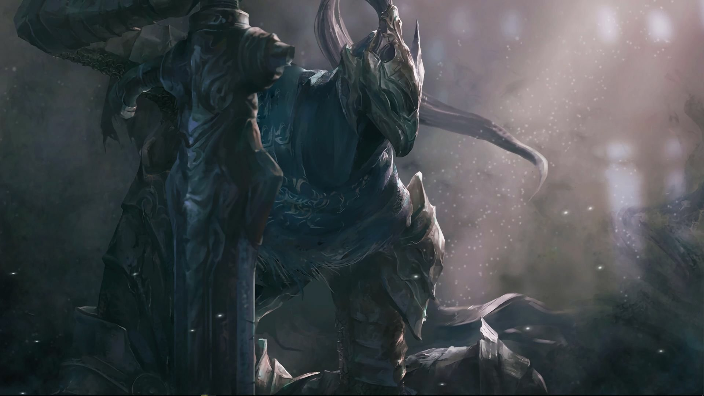
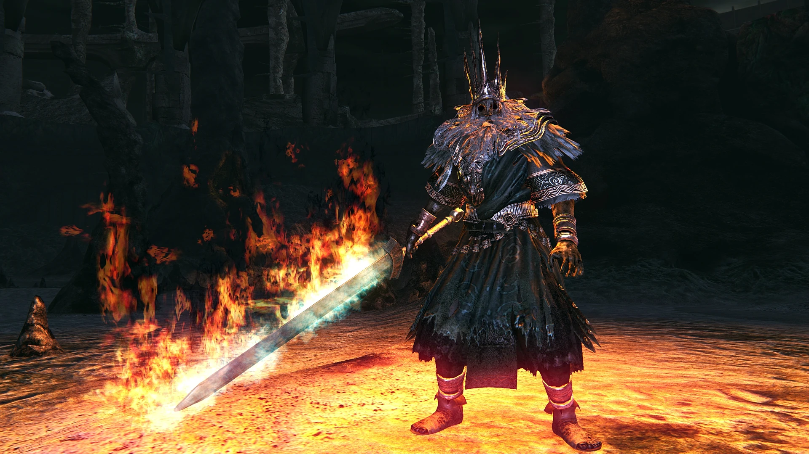
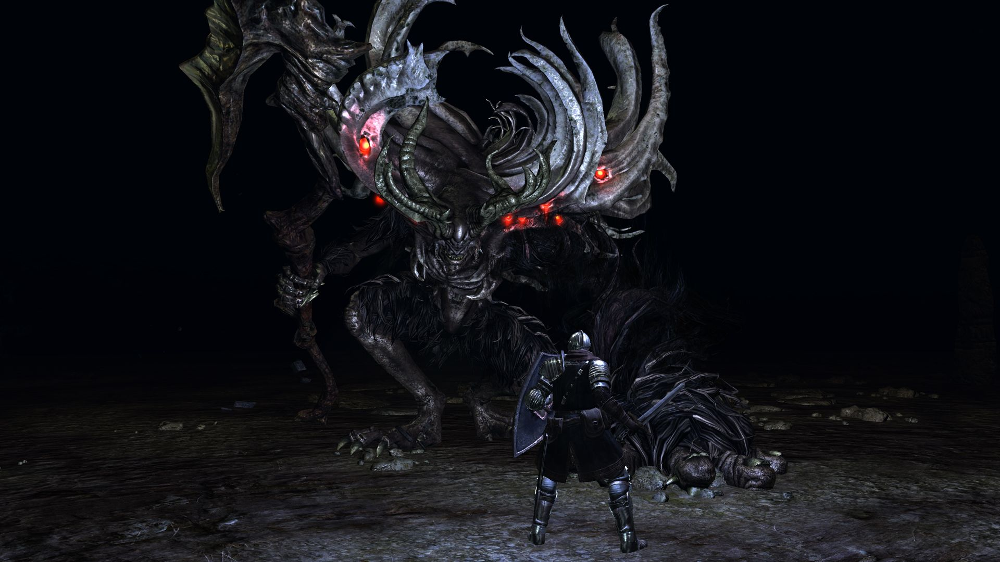

Los Jefes Mas Dificiles

Artorias the Abysswalker
Considerado uno de los mejores combates del juego. Sus movimientos rapidos exigen reflejos y precision.

Manus, Father of the Abyss
El origen del Abismo. Su agresividad extrema lo convierte en uno de los enemigos mas temidos.

Black Dragon Kalameet
Un dragon ancestral con ataques devastadores y una enorme resistencia.

Ornstein & Smough
Incluso hoy siguen siendo considerados uno de los jefes mas dificiles e iconicos de toda la saga Souls.